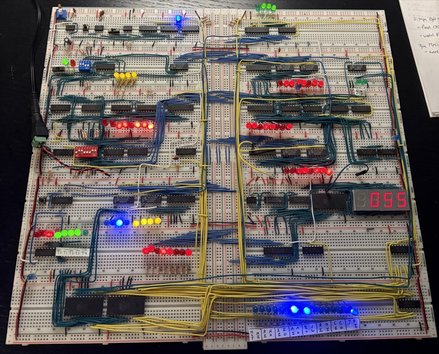
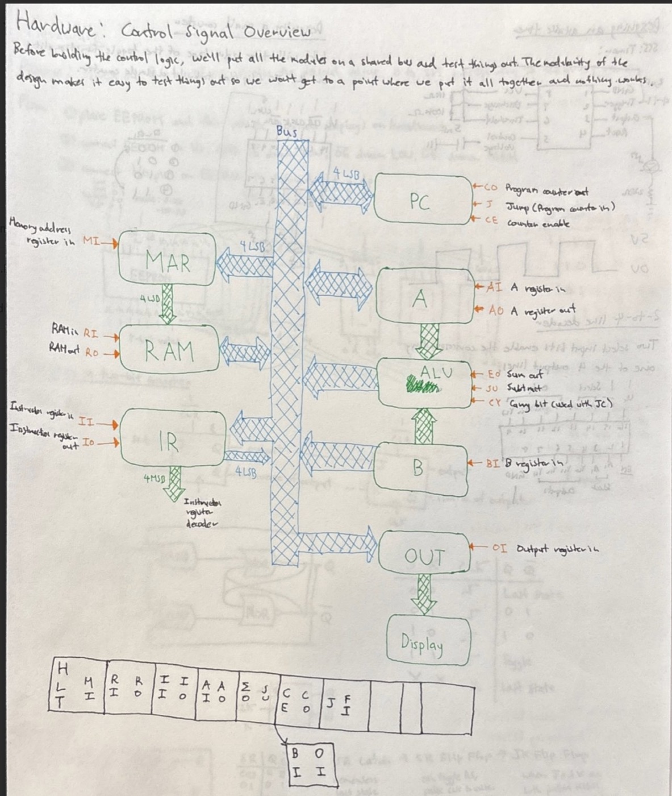
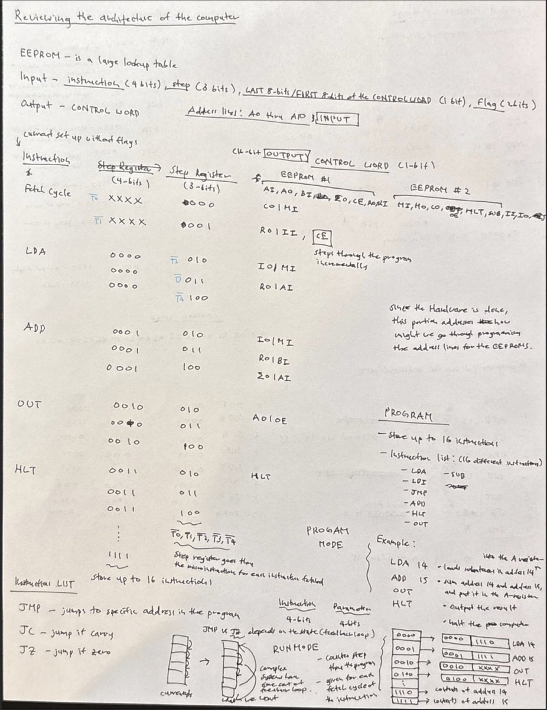
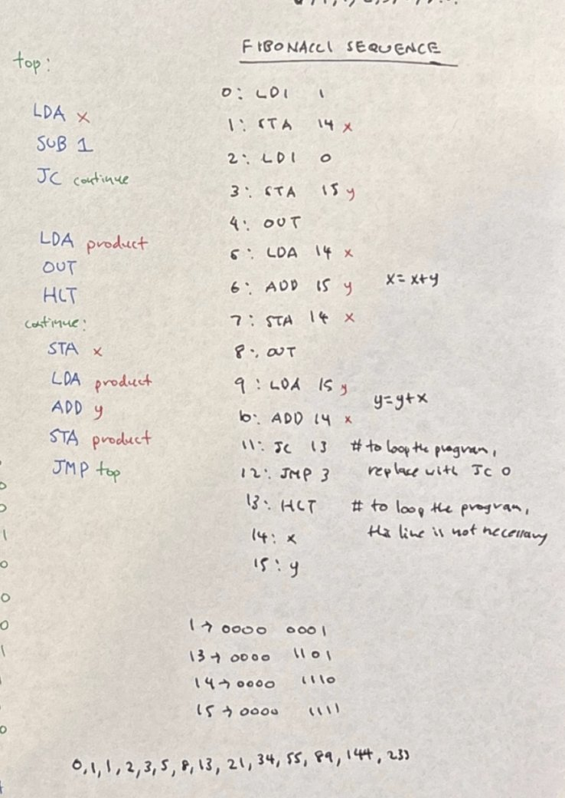

Built
A fully functional 8-bit computer, using breadboards, 7400 TTL chips, wires, and EEPROMs for the control logic.
How it runs
A von Neumann machine starts from an input program. In run mode the program counter starts, fetching instructions and data into the instruction register. The EEPROMs decode each instruction into using combinational logic. Once decoded, the clock steps through the microinstructions T1, T2, T3, T4, T5 in a , and the program counter increments.
Why Turing completeness matters
One of the most powerful implications of a machine being Turing complete, memory limits aside, is the general-purpose computer. It separated hardware from software: one machine serves many uses. A computer is not just a calculator, a cipher, or a differential equation solver. With software we can build abstractions and imagine human interfaces.
Programs it ran
- 6 × 8 = 48
- count to 255, down to 0, repeat
System design
Testing module by module forced me to think about system design. With any computer system, question your assumptions. Does this need to exist? Some requirements can be removed before we engineer a feature we don't need.
Debugging
Latency and crashes come from bottlenecks: CPU bound, memory bound, I/O bound, thermally throttled, or faulty assembly. They can be a nightmare to debug, because several explanations may be interlinked or cascade into each other.
Where toy models stop working
- ScaleHow does an operating system work? How do we compile programming languages?
- ReliabilityElectrical signals sometimes fault. How do we correct errors when signals aren't communicated?
- Use casesOperating systems, distributed systems, FPGAs, ASICs, AI accelerators, telecom chips, embedded systems, GPUs, automotive control.
Thanks
Mr. Wang, Charles Petzold, Ben Eater, and my dad.



